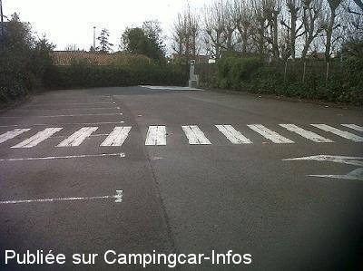
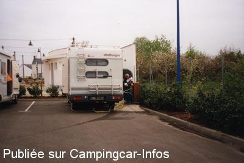

ASN = Aire de services avec stationnement nuit possible de :
NOTRE DAME DE MONTS
(N° 703)
Accès/adresse :
Rue des Maraichins
Place du Général de Gaulle
85690 NOTRE DAME DE MONTS
Place du Général de Gaulle
85690 NOTRE DAME DE MONTS
Latitude : (Nord) 46.83204° Décimaux ou 46° 49′ 55′′
Longitude : (Ouest) -2.12933° Décimaux ou -2° 7′ 45′′
Tarif : 2011
Stationnement nuitée de 20h à 8h : 5 €
Services gratuits
Paiement par horodateur
Type de borne : Artisanale
Services :


Autres informations :
Ouvert d'avril à octobre
20 emplacements
Tel : +33(0)251 588 497
tourisme@notre-dame-de-monts.fr
http://www.notre-dame-de-monts.fr/pages/fr/office-du-tourisme.php

Le 18/11/2012 par manu4402

Le 08/05/2003 par aire de l office du tourisme
de
philippedu62
le 03/09/2013 :
bonjour a tous
de passage sur l'aire pendant mes vacance 2013 en Vendée
jolie petite ville agréable et jolie plage
j'ai stationné sur l'aire en face de la mairie 1 nuit
( plus jamais ) dormir prés d'une autoroute non merci ,
en plus les camions poubelles a 5H00 du matin ( les containéres sont sur le parking ) et les gens qui viennent vider leur cadavres en verre a 6H30 du matin ( plus jamais cette aire est un cauchemar
l'autre aire est toujours bondés
Notre Dames des Monts mérite largement mieux
amicalement
bonjour a tous
de passage sur l'aire pendant mes vacance 2013 en Vendée
jolie petite ville agréable et jolie plage
j'ai stationné sur l'aire en face de la mairie 1 nuit
( plus jamais ) dormir prés d'une autoroute non merci ,
en plus les camions poubelles a 5H00 du matin ( les containéres sont sur le parking ) et les gens qui viennent vider leur cadavres en verre a 6H30 du matin ( plus jamais cette aire est un cauchemar
l'autre aire est toujours bondés
Notre Dames des Monts mérite largement mieux
amicalement
de
jm dompnier
le 04/08/2010 :
De passage 2ème quinzaine de juillet, l'aire de la plage est très aisée d'accès, de la place malgré l'heure à laquelle nous sommes arrivés (14h), très propre, présence de poubelles, et surtout située à 100m des plages très peu fréquentées (absence d'eau et de vidange).
De passage 2ème quinzaine de juillet, l'aire de la plage est très aisée d'accès, de la place malgré l'heure à laquelle nous sommes arrivés (14h), très propre, présence de poubelles, et surtout située à 100m des plages très peu fréquentées (absence d'eau et de vidange).
de
Rolf Ca.
le 13/09/2008 :
offiziell heißt es im Régement vom Fe.2006, dass in der Zeit v. April bis Nov. 5,00€/Nacht fällig sind, außerdem offiz. nur ein nächtigen von 20.00-8.00h erlaubt ist.
Der markierte Bereich am Place du General de Gaule an der Rue des Maraichins und gegenüber der T.-Info wird mit 20 Standpl. angegeben, der markierte Platz an der Rue de la Clairière, unterhalb des komunalen Campingpl. und wenige Meter vom Plage des Régates, wird mit 35 Standpl. angegeben.
Dies sind schrift. Veröffentlichungen, auf die man sich beziehen sollte/kann.. - siehe auch:
http://www.notre-dame-de-monts.fr/
offiziell heißt es im Régement vom Fe.2006, dass in der Zeit v. April bis Nov. 5,00€/Nacht fällig sind, außerdem offiz. nur ein nächtigen von 20.00-8.00h erlaubt ist.
Der markierte Bereich am Place du General de Gaule an der Rue des Maraichins und gegenüber der T.-Info wird mit 20 Standpl. angegeben, der markierte Platz an der Rue de la Clairière, unterhalb des komunalen Campingpl. und wenige Meter vom Plage des Régates, wird mit 35 Standpl. angegeben.
Dies sind schrift. Veröffentlichungen, auf die man sich beziehen sollte/kann.. - siehe auch:
http://www.notre-dame-de-monts.fr/
de
le 01/05/2007 :
Visited Easter 2007, two aires, one close to beach and one in town near tourist office/ Marie. Both well signpoated.
Visited Easter 2007, two aires, one close to beach and one in town near tourist office/ Marie. Both well signpoated.
de
esnault
le 07/08/2006 :
Aire de la plage complète. En effet, l'endroit est à 100 m de la plage, donc très frequenté en saison surtout par des CC qui ne bougent pas pendant 3 ou 4 jours ! L'aire du syndicat d'initiatives est moins fréquentée mais 5€ pour bricoler un système pour faire le plein d'eau et dormir avec le bruit de la route !
Aire de la plage complète. En effet, l'endroit est à 100 m de la plage, donc très frequenté en saison surtout par des CC qui ne bougent pas pendant 3 ou 4 jours ! L'aire du syndicat d'initiatives est moins fréquentée mais 5€ pour bricoler un système pour faire le plein d'eau et dormir avec le bruit de la route !